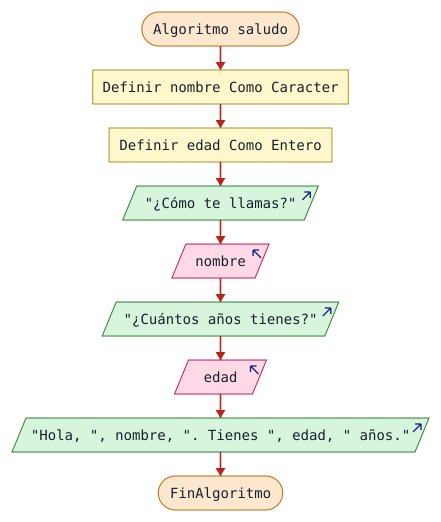
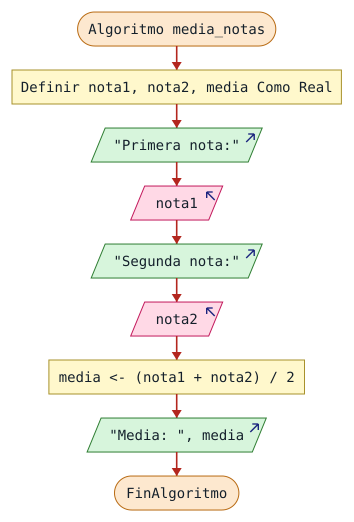
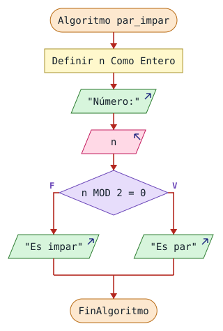
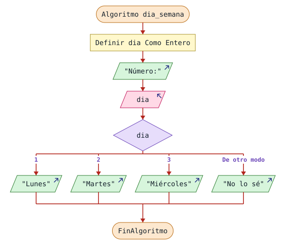
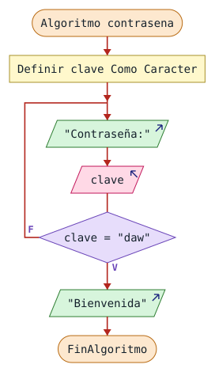
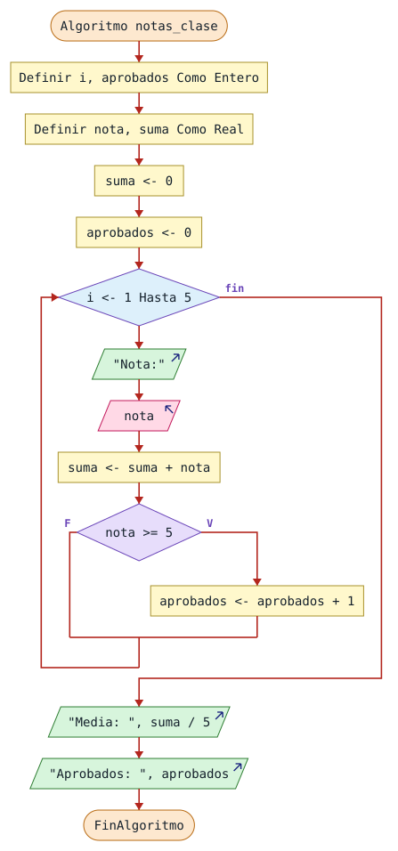
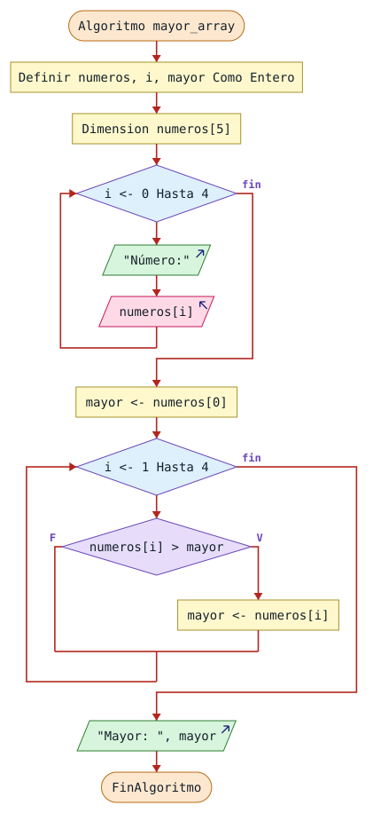
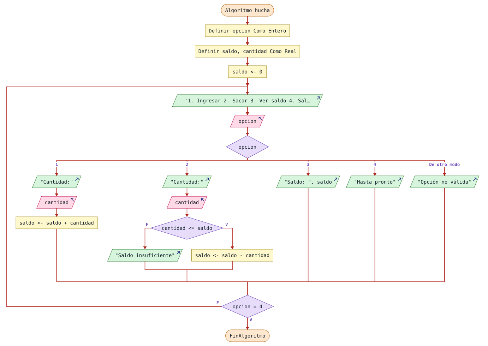

No necesitas saber nada de programación. Avanza en orden, una lección cada vez, e intenta cada ejercicio antes de abrir la solución.
Los ejemplos están en PSeInt con perfil Estricto. Puedes copiarlos en PSeInt o probarlos en Practica con PSeInt.
Programar es dar instrucciones a un ordenador. El ordenador es muy rápido, pero no adivina nada: hace exactamente lo que le dices.
La lógica de programación es la forma de pensar que ordena esas instrucciones. Se aprende antes que cualquier lenguaje y luego sirve para todos: Java, Python o JavaScript.
Un algoritmo es una lista de pasos para resolver un problema. Por ejemplo, preparar un té:
Escribe los pasos para sacar dinero de un cajero. Después detecta qué paso fallaría si cambiaras el orden.
Si eliges la cantidad antes de escribir el PIN, el cajero no te deja: primero tiene que comprobar quién eres. Puede haber otras soluciones correctas si los pasos son ordenados, precisos y terminan.
Antes de escribir código, responde tres preguntas:
Por ejemplo, para calcular el área de un rectángulo:
| Parte | Respuesta |
|---|---|
| Entrada | Base y altura |
| Proceso | Multiplicar base por altura |
| Salida | El área |
Así queda en PSeInt:
Algoritmo area_rectangulo Definir base, altura, area Como Real; Escribir "Base:"; Leer base; Escribir "Altura:"; Leer altura; area <- base * altura; Escribir "Área: ", area; FinAlgoritmo
Leer guarda lo que escribe la persona.<- guarda un valor.Escribir muestra un mensaje en pantalla.Identifica la entrada, el proceso y la salida de un programa que calcula cuánto pagas por 3 entradas de cine, sabiendo el precio de una.
Una variable es como una caja con nombre donde guardas un dato. Su contenido puede cambiar.
Algoritmo ejemplo_variable Definir edad Como Entero; edad <- 20; edad <- edad + 1; Escribir edad; FinAlgoritmo
La línea edad <- edad + 1 se lee de derecha a izquierda: coge lo que vale edad, súmale 1 y guárdalo otra vez en edad.
| Tipo | Guarda | Ejemplo |
|---|---|---|
| Entero | Números sin decimales | 20 |
| Real | Números con decimales | 3.5 |
| Caracter | Texto | "Hola" |
| Logico | Verdadero o falso | Verdadero |
Los decimales se escriben con punto, y el texto, entre comillas. Elige nombres claros: precio se entiende mejor que p.
Crea un programa que pida tu nombre y tu edad, y muestre: «Hola, Ana. Tienes 20 años.» con los datos que escribas.

El mismo algoritmo en PSeInt
Algoritmo saludo Definir nombre Como Caracter; Definir edad Como Entero; Escribir "¿Cómo te llamas?"; Leer nombre; Escribir "¿Cuántos años tienes?"; Leer edad; Escribir "Hola, ", nombre, ". Tienes ", edad, " años."; FinAlgoritmo
| Operador | Hace | Ejemplo | Resultado |
|---|---|---|---|
+ | Suma | 7 + 2 | 9 |
- | Resta | 7 - 2 | 5 |
* | Multiplica | 7 * 2 | 14 |
/ | Divide | 7 / 2 | 3.5 |
MOD | Resto de dividir | 7 MOD 2 | 1 |
^ | Potencia | 7 ^ 2 | 49 |
Orden: primero paréntesis, luego potencias, luego *, / y MOD, y al final + y -.
2 + 3 * 4 da 14. En cambio, (2 + 3) * 4 da 20.
MOD es muy útil: si n MOD 2 es 0, el número es par, porque dividirlo entre 2 no deja resto.
Pide dos notas y muestra su media. Comprueba: con 6 y 9 debe salir 7.5.

El mismo algoritmo en PSeInt
Algoritmo media_notas Definir nota1, nota2, media Como Real; Escribir "Primera nota:"; Leer nota1; Escribir "Segunda nota:"; Leer nota2; media <- (nota1 + nota2) / 2; Escribir "Media: ", media; FinAlgoritmo
Sin paréntesis, nota1 + nota2 / 2 daría 10.5, porque dividiría primero.
Una prueba de escritorio consiste en seguir el programa línea a línea, apuntando cuánto vale cada variable. Sirve para entender un programa y encontrar errores.
a <- 5; b <- 2; a <- a + b; b <- a * 2;
| Línea | a | b |
|---|---|---|
a <- 5 | 5 | — |
b <- 2 | 5 | 2 |
a <- a + b | 7 | 2 |
b <- a * 2 | 7 | 14 |
Una variable guarda solo su último valor: el 5 de a desaparece al guardar el 7.
Haz la prueba de escritorio. ¿Qué valen p y q al final?
p <- 3; q <- p + 1; p <- q * q; q <- p - q;
| Línea | p | q |
|---|---|---|
p <- 3 | 3 | — |
q <- p + 1 | 3 | 4 |
p <- q * q | 16 | 4 |
q <- p - q | 16 | 12 |
Al final, p vale 16 y q vale 12.
Una condición es una pregunta que solo se responde con verdadero o falso.
| Operador | Significa | Ejemplo con edad = 20 | Resultado |
|---|---|---|---|
= | Igual | edad = 18 | Falso |
<> | Distinto | edad <> 18 | Verdadero |
> | Mayor | edad > 18 | Verdadero |
< | Menor | edad < 18 | Falso |
>= | Mayor o igual | edad >= 20 | Verdadero |
<= | Menor o igual | edad <= 18 | Falso |
Para juntar condiciones usamos Y, O y NO:
| A | B | A Y B | A O B | NO A |
|---|---|---|---|---|
| Verdadero | Verdadero | Verdadero | Verdadero | Falso |
| Verdadero | Falso | Falso | Verdadero | Falso |
| Falso | Verdadero | Falso | Verdadero | Verdadero |
| Falso | Falso | Falso | Falso | Verdadero |
Con edad = 16 y entrada = Verdadero, ¿cuál es el resultado de cada condición?
edad >= 18 Y entradaedad >= 18 O entradaNO entradaedad >= 12 Y edad <= 17edad >= 18 es falso, y con Y deben cumplirse las dos.entrada.entrada es verdadero y NO le da la vuelta.Si ejecuta una parte u otra según una condición.
Algoritmo mayor_edad Definir edad Como Entero; Escribir "Edad:"; Leer edad; Si edad >= 18 Entonces Escribir "Puedes pasar"; SiNo Escribir "Todavía no"; FinSi FinAlgoritmo
SiNo es opcional. Para más de dos caminos, se pone un Si dentro de otro. Se llama Si anidado:
Algoritmo calificacion Definir nota Como Real; Escribir "Nota:"; Leer nota; Si nota < 5 Entonces Escribir "Suspenso"; SiNo Si nota < 9 Entonces Escribir "Aprobado"; SiNo Escribir "Sobresaliente"; FinSi FinSi FinAlgoritmo
Pide un número y di si es par o impar.

El mismo algoritmo en PSeInt
Algoritmo par_impar Definir n Como Entero; Escribir "Número:"; Leer n; Si n MOD 2 = 0 Entonces Escribir "Es par"; SiNo Escribir "Es impar"; FinSi FinAlgoritmo
Segun compara una variable con varios valores. Queda más limpio que muchos Si cuando hay un menú.
Algoritmo menu_bebidas Definir opcion Como Entero; Escribir "1. Café 2. Café con leche 3. Té"; Leer opcion; Segun opcion Hacer 1: Escribir "Café"; 2: Escribir "Café con leche"; 3: Escribir "Té"; De Otro Modo: Escribir "Opción no válida"; FinSegun FinAlgoritmo
De Otro Modo recoge cualquier valor que no esté en la lista.
Pide un número del 1 al 3 y muestra «Lunes», «Martes» o «Miércoles». Con otro número, muestra «No lo sé».

El mismo algoritmo en PSeInt
Algoritmo dia_semana Definir dia Como Entero; Escribir "Número:"; Leer dia; Segun dia Hacer 1: Escribir "Lunes"; 2: Escribir "Martes"; 3: Escribir "Miércoles"; De Otro Modo: Escribir "No lo sé"; FinSegun FinAlgoritmo
Mientras comprueba la condición antes de entrar. Puede no ejecutarse nunca.
Algoritmo cuenta_atras Definir n Como Entero; n <- 3; Mientras n > 0 Hacer Escribir n; n <- n - 1; FinMientras Escribir "¡Ya!"; FinAlgoritmo
Repetir comprueba la condición al final. Se ejecuta al menos una vez. Va muy bien para validar datos:
Algoritmo validar_nota Definir nota Como Entero; Repetir Escribir "Nota del 0 al 10:"; Leer nota; Hasta Que nota >= 0 Y nota <= 10 Escribir "Correcto: ", nota; FinAlgoritmo
Bucle infinito: si la condición nunca cambia, el programa no termina. En cuenta_atras, olvidar n <- n - 1 provocaría uno.
Pide una contraseña hasta que la persona escriba daw. Después muestra «Bienvenida». Y piensa: ¿es mejor Mientras o Repetir?

El mismo algoritmo en PSeInt
Algoritmo contrasena Definir clave Como Caracter; Repetir Escribir "Contraseña:"; Leer clave; Hasta Que clave = "daw" Escribir "Bienvenida"; FinAlgoritmo
Es mejor Repetir, porque hay que preguntar por lo menos una vez.
Para cuenta solo. Su variable avanza en cada vuelta.
Algoritmo del_uno_al_cinco Definir i Como Entero; Para i <- 1 Hasta 5 Hacer Escribir i; FinPara FinAlgoritmo
pares <- pares + 1suma <- suma + notaHay que darles un valor inicial, normalmente 0, antes del bucle.
Algoritmo suma_cuatro Definir i, n, suma Como Entero; suma <- 0; Para i <- 1 Hasta 4 Hacer Escribir "Número:"; Leer n; suma <- suma + n; FinPara Escribir "Suma: ", suma; FinAlgoritmo
Pide 5 notas. Muestra la media y cuántas son aprobados (5 o más). Con 4, 6, 8, 5 y 2 debe salir media 5 y 3 aprobados.

El mismo algoritmo en PSeInt
Algoritmo notas_clase Definir i, aprobados Como Entero; Definir nota, suma Como Real; suma <- 0; aprobados <- 0; Para i <- 1 Hasta 5 Hacer Escribir "Nota:"; Leer nota; suma <- suma + nota; Si nota >= 5 Entonces aprobados <- aprobados + 1; FinSi FinPara Escribir "Media: ", suma / 5; Escribir "Aprobados: ", aprobados; FinAlgoritmo
Un array es una fila de cajas con el mismo nombre. Cada caja se identifica por su posición, llamada índice.
| Índice | 0 | 1 | 2 |
|---|---|---|---|
notas | 7 | 4 | 9 |
En el perfil Estricto, el primer índice es 0. Un array de 3 elementos va de 0 a 2.
Lo normal es recorrerlos con Para:
Algoritmo guardar_notas Definir notas, i Como Entero; Dimension notas[3]; Para i <- 0 Hasta 2 Hacer Escribir "Nota:"; Leer notas[i]; FinPara Para i <- 0 Hasta 2 Hacer Escribir "Nota ", i, ": ", notas[i]; FinPara FinAlgoritmo
Guarda 5 números en un array y muestra el mayor. Con 3, 9, 2, 7 y 5 debe salir 9.

El mismo algoritmo en PSeInt
Algoritmo mayor_array Definir numeros, i, mayor Como Entero; Dimension numeros[5]; Para i <- 0 Hasta 4 Hacer Escribir "Número:"; Leer numeros[i]; FinPara mayor <- numeros[0]; Para i <- 1 Hasta 4 Hacer Si numeros[i] > mayor Entonces mayor <- numeros[i]; FinSi FinPara Escribir "Mayor: ", mayor; FinAlgoritmo
Se parte del primer elemento, y no de 0, para que funcione también con números negativos.
Un subproceso es un bloque con nombre que puedes usar cuando quieras. En otros lenguajes se llama función o método.
SubProceso resultado <- cuadrado(n) Definir resultado Como Entero; resultado <- n * n; FinSubProceso Algoritmo usar_cuadrado Definir numero Como Entero; Escribir "Número:"; Leer numero; Escribir "Cuadrado: ", cuadrado(numero); FinAlgoritmo
Crea el subproceso mayor(a, b), que devuelva el mayor de dos números, y úsalo desde el algoritmo.
SubProceso resultado <- mayor(a, b) Definir resultado Como Entero; Si a > b Entonces resultado <- a; SiNo resultado <- b; FinSi FinSubProceso Algoritmo usar_mayor Definir num1, num2 Como Entero; Escribir "Primer número:"; Leer num1; Escribir "Segundo número:"; Leer num2; Escribir "Mayor: ", mayor(num1, num2); FinAlgoritmo
| Situación | Usa |
|---|---|
| Dos caminos | Si |
| Muchas opciones de un valor | Segun |
| Repetir un número conocido de veces | Para |
| Repetir hasta que pase algo | Mientras o Repetir |
| Guardar muchos datos del mismo tipo | Array |
| Repetir un trozo de código en varios sitios | Subproceso |
| Error | Solución |
|---|---|
| Usar una variable sin valor | Dale un valor antes |
| Olvidar reiniciar el acumulador | Ponlo a 0 antes del bucle |
| Bucle infinito | Cambia dentro lo que se comprueba |
> cuando debía ser >= | Prueba el valor exacto del límite |
| Índice fuera del array | Con 5 elementos, llega hasta 4 |
Este programa debería sumar del 1 al 3, pero tiene dos errores. Encuéntralos.
Algoritmo con_errores Definir i, suma Como Entero; i <- 1; Mientras i <= 3 Hacer suma <- suma + i; FinMientras Escribir suma; FinAlgoritmo
suma no tiene valor inicial. Falta suma <- 0; antes del bucle.i no cambia, así que el bucle es infinito. Falta i <- i + 1; dentro.Algoritmo corregido Definir i, suma Como Entero; i <- 1; suma <- 0; Mientras i <= 3 Hacer suma <- suma + i; i <- i + 1; FinMientras Escribir suma; FinAlgoritmo
Ahora vas a usarlo todo en un programa pequeño.
Crea un menú que se repita hasta elegir Salir:
Pistas: el saldo empieza en 0. Usa Repetir para el menú y Segun para las opciones.

El mismo algoritmo en PSeInt
Algoritmo hucha Definir opcion Como Entero; Definir saldo, cantidad Como Real; saldo <- 0; Repetir Escribir "1. Ingresar 2. Sacar 3. Ver saldo 4. Salir"; Leer opcion; Segun opcion Hacer 1: Escribir "Cantidad:"; Leer cantidad; saldo <- saldo + cantidad; 2: Escribir "Cantidad:"; Leer cantidad; Si cantidad <= saldo Entonces saldo <- saldo - cantidad; SiNo Escribir "Saldo insuficiente"; FinSi 3: Escribir "Saldo: ", saldo; 4: Escribir "Hasta pronto"; De Otro Modo: Escribir "Opción no válida"; FinSegun Hasta Que opcion = 4 FinAlgoritmo
Practica con ejercicios al azar y con la batería de algoritmia. Lo que has aprendido es la misma lógica que usarás en Java.